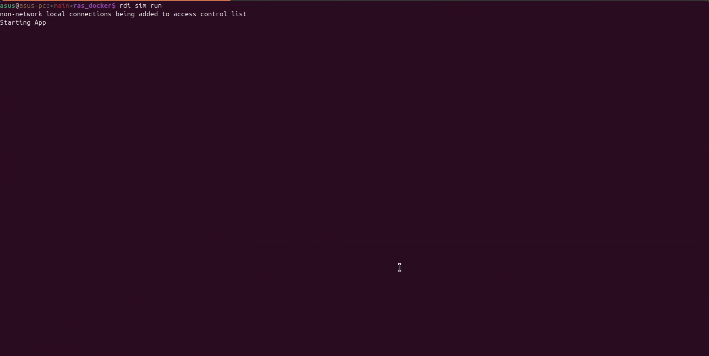
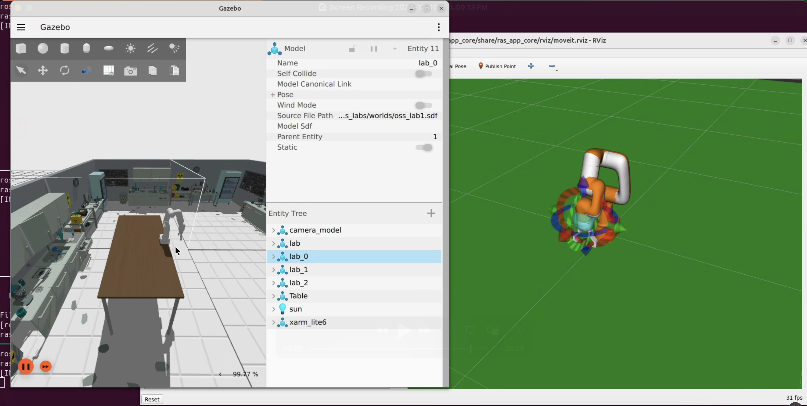
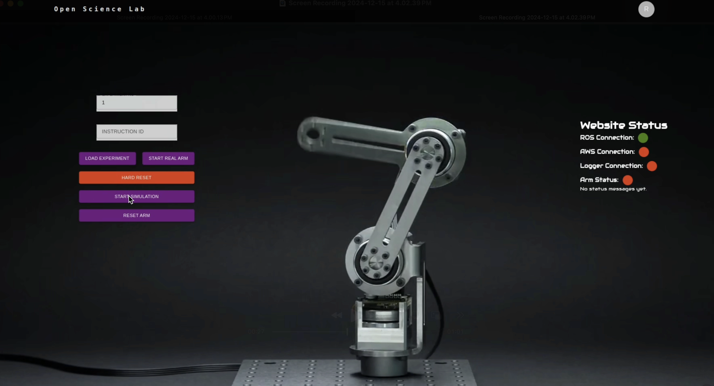

Sim Examples
The sim examples are designed to work with the Ignition Gazebo simulator. The examples are located in the ras_sim_lab directory under the apps folder.
To get started with the examples, follow the steps below:
After the installation of RAS, initialize the sim application by running the following command:
rdi sim init

rdi sim init will first pull application specific repository, then pull it’s dependencies, and after that, pull docker image
Build the ros packages for the sim application by running the following command:
rdi sim build

To build the docker image use –force argument with command:
rdi sim build --force
Start the sim application by running the following command:
rdi sim run

It will start the Ignition Gazebo simulator, rviz, and other necessary components. You can now interact with the simulator.

To start the experiment, open the following URL in your browser:
Then enter 1 in the Experiment ID field and click LOAD EXPERIMENT. After that click START SIMULATION to start the experiment.

The robot arm will perform the motion in the simulation and trajectory will be displayed in the rviz.